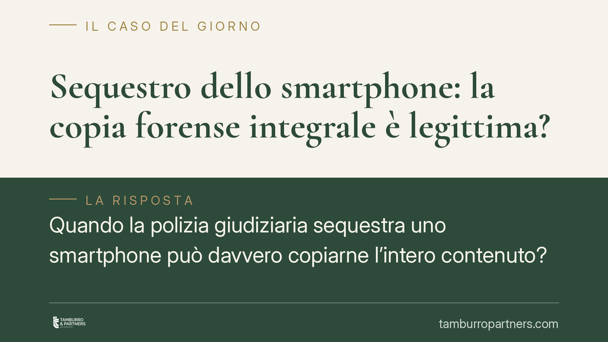

Sequestro dello smartphone: la copia forense integrale è legittima?
Quando la polizia giudiziaria sequestra uno smartphone può davvero copiarne l'intero contenuto? L'orientamento della Cassazione è netto: il vincolo probatorio deve colpire solo i dati pertinenti al reato, entro un arco temporale definito. La duplicazione indiscriminata dell'intera memoria rischia di tradursi in un'acquisizione illegittima, non sanata dalla restituzione del dispositivo.

Il caso: dal sequestro del telefono alla copia integrale
Il sequestro di uno smartphone è oggi uno degli atti investigativi più frequenti e più invasivi. Il dispositivo non contiene solo elementi utili all'indagine, ma l'intera vita digitale della persona: chat, foto, cronologia, posizione, credenziali, dati di salute.
Il nodo è questo: la polizia giudiziaria, una volta acquisito il telefono, procede spesso a una copia forense integrale della memoria (la cosiddetta *copia bit a bit*), cioè un duplicato di tutto ciò che il dispositivo contiene. Il problema giuridico nasce quando quella copia va ben oltre i fatti per cui si procede.
Inquadramento normativo
Il riferimento centrale è l'art. 253 c.p.p., che consente il sequestro probatorio del corpo del reato e delle cose pertinenti al reato necessarie all'accertamento dei fatti. La parola chiave è *pertinenza*: il vincolo è legittimo solo se mirato su ciò che serve a provare quello specifico reato.
Quando i dati sono conservati presso fornitori di servizi (gestori, provider), entrano in gioco anche l'art. 254 c.p.p. (sequestro di corrispondenza) e l'art. 254-bis c.p.p. (dati detenuti da fornitori di servizi informatici e telematici), che impongono modalità di acquisizione rispettose dell'integrità e dell'originalità del dato.
L'orientamento consolidato della Cassazione – in linea con i principi espressi dalle Sezioni Unite in materia di sequestro di dati informatici e, sul versante costituzionale, con la Corte costituzionale n. 170/2023 in tema di messaggistica – richiede che il decreto di sequestro indichi con precisione:
- i dati pertinenti all'ipotesi di reato;
- un arco temporale definito, per evitare acquisizioni retroattive illimitate.
> Nota redazionale: le pronunce di legittimità vanno sempre verificate per numero, anno e massima presso le fonti ufficiali prima di essere citate. Qui si espone l'*orientamento* della Corte, non una singola decisione non confermata.
Il principio non riguarda solo gli smartphone: si estende a ogni acquisizione massiva di dati elettronici (pc, tablet, cloud, caselle di posta).
Perché la restituzione del telefono non basta
Un punto spesso frainteso. La restituzione del dispositivo all'indagato non sana l'illegittimità di una copia forense integrale già effettuata.
La ragione è semplice: ciò che rileva non è il possesso fisico dell'oggetto, ma il permanere della copia dei dati nella disponibilità dell'autorità procedente. Se la duplicazione è avvenuta senza i requisiti di pertinenza e delimitazione, il vizio resta anche dopo aver riavuto l'apparecchio in mano.
È il principio di proporzionalità tra esigenze di accertamento del reato e diritto alla riservatezza a imporre questo esito: l'investigazione può comprimere la privacy solo nella misura strettamente necessaria.
Implicazioni pratiche per l'indagato
Per chi subisce il sequestro del proprio dispositivo, le conseguenze sono concrete:
- la copia integrale non delimitata è contestabile;
- i dati estranei all'indagine non dovrebbero restare acquisiti agli atti;
- esiste un rimedio tempestivo e specifico, da attivare rapidamente.
Lo strumento è il riesame reale avverso il decreto di sequestro, previsto dagli artt. 257 e 324 c.p.p., da proporre entro il termine di dieci giorni dall'esecuzione o dalla conoscenza del provvedimento. Davanti al tribunale del riesame si può eccepire il difetto di pertinenza e l'assenza di delimitazione temporale.
Quanto ai dati non pertinenti già copiati, la loro espunzione o eliminazione si àncora alla disciplina della restituzione delle cose sequestrate (artt. 262 e 263 c.p.p.): venuta meno l'esigenza probatoria, ciò che non serve all'accertamento non ha titolo per restare acquisito.
Cosa fare in concreto
- Conserva ogni atto: verbale di sequestro, decreto del PM, eventuale decreto di convalida. Sono la base di qualsiasi contestazione.
- Verifica la delimitazione: controlla se il decreto specifica i dati pertinenti al reato e un arco temporale definito. L'assenza di questi elementi è il profilo critico.
- Attiva il riesame nei termini: il termine di dieci giorni ex artt. 257/324 c.p.p. è perentorio. Agire oltre significa perdere il rimedio.
- Chiedi l'espunzione dei dati estranei: sollecita, nelle sedi opportune, la restituzione ed eliminazione dei dati non pertinenti ex artt. 262-263 c.p.p.
- Rivolgiti tempestivamente a un difensore: la natura tecnica dell'acquisizione forense rende opportuno un confronto con un legale fin dalle prime fasi.
In sintesi
Il sequestro di uno smartphone non è una delega in bianco a copiare tutto. Pertinenza, delimitazione temporale e proporzionalità sono i presìdi che distinguono un'acquisizione legittima da una invasione indiscriminata della sfera digitale. Riconoscere il vizio in tempo, e attivare il riesame nei termini, è spesso decisivo.
---
*Contributo informativo a cura di Tamburro & Partners - Avv. Giuseppe Tamburro. Non costituisce parere legale.*
Ogni condominio ha una storia a sé.
Se gestisci un'amministrazione e vuoi un confronto su una specifica questione condominiale, scrivi allo studio. Ti rispondiamo entro un giorno lavorativo.